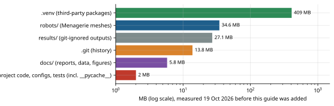

Every folder and every important file: what it is for, what it takes in and gives back, what depends on it, and whether it is still used. The descriptions come from reading the source at commit 5dbeffd, not from the README.
The repository root is C:\Users\rkhmh\robotics-lab. Git tracks 451 objects
(12.4 MB of history). The tree below lists every tracked file except the 70 files of the vendored robot
model and the data files in docs/research; line counts are from
wc -l.
robotics-lab/ ├── main.py 159 entry point: one simulation, viewer or headless (Ch. 3) ├── benchmark.py 76 CLI: controller benchmark → simulation/benchmark.py ├── planning_benchmark.py 47 CLI: planner benchmark → simulation/planning_benchmark.py ├── robustness_experiment.py 46 CLI: wall-variant experiment → simulation/robustness.py ├── requirements.txt 11 mujoco 3.16.0, numpy, scipy, osqp, PyYAML, pytest, matplotlib ├── README.md / CLAUDE.md user guide / working rules and hard-won facts for developers ├── robots/ │ ├── panda.py 107 Panda: names, limits, home pose, MjSpec edits (torque motors, EE site) │ └── models/franka_emika_panda/ THIRD-PARTY: MuJoCo Menagerie MJCF + meshes (never edited) ├── environments/ 5 MJCF scenes: empty, table, obstacles, planning_demo, planning_narrow ├── simulation/ │ ├── engine.py 215 SimulationEngine: builds the scene, owns MjModel/MjData, steps physics │ ├── runner.py 440 SimulationRunner: config → engine + task + controller; control loop │ ├── kinematics.py 163 ArmKinematics: FK, Jacobian, DLS inverse kinematics, contact checks │ ├── benchmark.py 408 controller benchmark: scenarios, metrics, CSV/JSON/plots │ ├── planning_benchmark.py 407 planner benchmark: planning statistics + closed-loop execution │ └── robustness.py 348 wall-variant episodes, ExactClearance metric ├── controllers/ │ ├── base.py 34 Controller interface: reset(), compute(q, qd, q_ref, qd_ref, dt, t, qdd_ref) │ ├── pid.py 56 JointPIDController (position servos, v0.1) │ ├── prediction.py 311 MuJoCoPredictionModel: linearized MuJoCo dynamics x⁺ = Ax + Bu + c │ ├── mpc.py 543 JointMPCController: servo-setpoint MPC (v0.2) + shared MPC statistics │ ├── computed_torque.py 81 ComputedTorqueController (v0.3) │ ├── torque_mpc.py 380 TorqueMPCController (v0.3/v0.4) — the main controller │ ├── dynamics.py 44 ArmInverseDynamics: mj_inverse on scratch data │ └── disturbance.py 83 JointDisturbanceObserver (v0.4) ├── tasks/ │ ├── joint_target.py 156 JointTargetTask: waypoints → timed reference q(t), q̇(t), q̈(t) │ ├── trajectory.py 341 time scaling: quintic, double-S, feasibility checks (v0.4) │ ├── reach.py 135 CartesianReachTask: (x, y, z) targets via IK or the planner │ ├── planned_joint.py 105 PlannedJointTask: joint waypoints joined by planned paths (v0.5) │ └── pick_place.py 0 EMPTY placeholder, imported by nothing ├── planning/ v0.5 motion planning │ ├── collision.py 365 CollisionChecker: configuration/edge validity with clearance │ ├── rrt_connect.py 210 RRTConnect: bidirectional sampling planner │ ├── shortcut.py 106 pruning + random shortcuts, re-validated │ ├── ik.py 86 ik_candidates: several collision-free IK postures │ ├── motion_planner.py 186 MotionPlanner facade: plan_joint / plan_to_position │ └── visualization.py 70 planned-path markers for the viewer (visual only) ├── configs/ 7 YAML files: default, reach, planning_demo, benchmarks, wall variants ├── tests/ 12 files, 157 test functions, 189 collected tests (Ch. 16) ├── tools/ 11 scripts: audits, diagnostics, profilers, plots, video renderer ├── docs/research/ reports v0.3–v0.5.2, worklogs, CSV data, 14 figures └── results/ git-ignored benchmark outputs and videos (27 MB)
tasks/pick_place.py exists but is empty (0 lines) since the very first commit
(184bfd6). Nothing imports it. It marks a planned feature, not an implemented one. Likewise, the module
docstring of simulation/runner.py says the controller is "joint_pid or joint_mpc",
but the code supports four types (CONTROLLER_TYPES also has torque_ctc and
torque_mpc); the docstring was not updated in v0.3. The comment in
configs/default.yaml lists the environments as "table | empty | obstacles" and
omits the two planning scenes, which do work.
The code follows one rule stated in CLAUDE.md: modules are separated by role. Environments know nothing about robots; tasks only produce references; controllers only produce actuator commands; the planner runs before motion and is invisible to the controllers. shows how the pieces connect during a run.
SimulationRunner, which builds the
engine, optionally the planner, the task and the controller. The planner runs once, while the task is
being built. During motion only the dashed loop runs, 500 times per simulated second.Not everything in the folder is "the project". It helps to know which bytes are ours, which are other people's, and which are generated.
| Category | Where | Tracked by Git? | Notes |
|---|---|---|---|
| Project source (Python) | root scripts, simulation/, controllers/, tasks/, planning/, robots/panda.py | yes | about 7,000 lines including tools; this is what the guide documents |
| Configuration and scenes | configs/, environments/ | yes | YAML and MJCF; small |
| Tests | tests/ | yes | 2,673 lines, 189 tests |
| Third-party robot model | robots/models/franka_emika_panda/ | yes (vendored) | Apache-2.0, 34.6 MB of meshes; never edited |
| Third-party Python packages | .venv/ | no (.gitignore) | 409 MB: SciPy 117 MB, MuJoCo 62 MB, NumPy 55 MB, Matplotlib 33 MB, PyOpenGL 30 MB |
| Research documentation | docs/research/ | yes | reports, worklogs, CSV copies of results, figures |
| Generated results | results/ | no (.gitignore) | 27 MB; videos 14 MB; each benchmark run writes a folder |
| Caches | __pycache__/, .pytest_cache/ | no | regenerated automatically |
| Git history | .git/ | — | 13.8 MB, 18 commits from 14 to 19 Oct 2026 |

du on 19 Oct 2026, before this guide was
added). The installed third-party packages outweigh the project's own code by a factor of about 200.robots/panda.py defines the frozen dataclass Panda, a
name-level description of the robot: joint names (joint1…joint7), actuator names,
the base body link0, the end-effector site ee_site, the home pose
HOME_QPOS, and the datasheet velocity, acceleration and jerk limits. Its method
load_spec() loads the Menagerie XML into an editable mujoco.MjSpec, adds the
end-effector site 0.1034 m below the hand body (between the fingertips), and, for
actuation="torque", calls _make_torque_actuators, which rewrites actuators 1–7
from position servos to direct torque motors with the same force limits. Input: the actuation
choice. Output: an MjSpec. Used by: SimulationEngine and the tests.
environments/*.xml are MuJoCo scene files. Each must provide a
robot_mount site, a mocap body named target (the red marker sphere, which cannot
collide), and the implicitfast integrator with a 2 ms timestep. They are pure data and are
read by build_spec.
engine.py — SimulationEngine. build_spec(environment,
robot, overrides) loads the scene, applies optional geometry overrides (v0.5.1), attaches the robot
at the mount site, and excludes base-table contact. The constructor compiles the model and creates
MjModel/MjData, then caches index arrays: arm_qpos_adr,
arm_dof_adr (where the arm joints live in MuJoCo's state vectors), actuator ids, joint limits
and command limits. Methods: reset(arm_qpos) (the only place joint positions are
written), arm_qpos(), arm_qvel(), ee_position(),
set_arm_command(ctrl) (clips to the actuator command range), step(),
apply_external_force() (for push tests), perturbed_model(mass_scale) (a copy with
wrong masses for mismatch experiments), forward_kinematics(q) and robot_contacts().
The attribute controller_model is the model handed to model-based controllers; it equals the
plant model unless a mismatch experiment replaces it. Used by almost everything.
runner.py — SimulationRunner is the
composition root: the one place that knows about every other module. load_config
reads YAML with single inheritance (extends:). build_controller and its helpers
(build_pid, build_mpc, build_ctc, build_torque_mpc,
build_observer) construct controllers from config. The runner's _build_task builds
the task (and the planner if enabled); step() is the control loop body;
run_headless() returns a RunLog; run_viewer() opens MuJoCo's passive
viewer and paces the simulation to wall-clock time. Chapter 3 walks through it line by line.
kinematics.py — ArmKinematics computes forward kinematics
(fk, fk_pose), the 3×7 end-effector Jacobian (jacobian, via
mj_jacSite), damped-least-squares inverse kinematics (solve_ik), contact queries
(contacts, path_contacts) and the v0.3 "IK + straight-path collision check"
planner plan_target. It also provides rotation_angle for orientation metrics. It
always works on private scratch data. Used by the runner, the planner (planning/ik.py),
the benchmarks and the video tool.
benchmark.py, planning_benchmark.py,
robustness.py are experiment drivers. They build runner configurations for
each (controller, scenario) or (scenario, seed) pair, run them headless, compute metrics from the simulated
robot (never from controller predictions) and write CSV/JSON/Markdown/plots to results/.
robustness.py also defines ExactClearance, an independent distance measurement
with mj_geomDistance over every robot–environment geom pair. Chapter 15 covers the experiments.
| File / class | Inputs → outputs | Depends on | Status |
|---|---|---|---|
base.py Controller | abstract reset(), compute(q, q̇, q_ref, q̇_ref, dt, t, q̈_ref) → command | — | interface of all four |
pid.py JointPIDController | tracking error → servo setpoint (rad) | base | active (default controller; also servo-MPC fallback) |
prediction.py MuJoCoPredictionModel | (q, q̇, u) → affine model A, B, c over one control interval; gravity torque | MuJoCo | used by both MPCs |
mpc.py JointMPCController | state + reference preview → servo setpoint via OSQP | prediction, pid | active but weaker than PID (Ch. 9); MPCStats and helpers reused by the torque MPC |
dynamics.py ArmInverseDynamics | (q, q̇, q̈) → τ via mj_inverse | MuJoCo | used by CTC, observer, trajectory torque check |
computed_torque.py ComputedTorqueController | error → τ = ID(q, q̇, q̈_des) | dynamics, disturbance | active; torque-MPC fallback |
disturbance.py JointDisturbanceObserver | measured motion + applied τ → disturbance estimate d̂ (Nm) | dynamics | on by default in the torque MPC |
torque_mpc.py TorqueMPCController | state + preview → τ via OSQP | prediction, disturbance, mpc helpers | active; the main research controller |
A task turns a description of the goal into a reference: a function of time returning a
Reference(q, qd, waypoint_index, qdd). Tasks never touch the simulation.
JointTargetTask (joint_target.py): moves along straight
joint-space lines between waypoints, each move timed by plan_segment and followed by a hold.
Optional per-move durations (move_times, hold_times) support planned via points.
Can loop.quintic, DoubleS),
KinematicLimits, plan_segment (lengthens a move until velocity, acceleration, jerk
and torque limits hold, or raises TrajectoryInfeasible) and check_reference.CartesianReachTask (reach.py): resolves each (x, y, z)
target through an injected plan function (either IK + straight-path check, or the motion
planner), skips unreachable targets with a reason, and builds an internal JointTargetTask.PlannedJointTask (planned_joint.py): like
JointTargetTask but each move follows a planned path; raises PlanningFailed if any
move cannot be planned.CollisionChecker (collision.py): is a configuration valid
(inside joint limits minus 0.05 rad, no contact, ≥ 20 mm from the environment)? Is a straight edge between
two configurations valid at all its samples? Works on a private deep copy of the model with contact margins,
midphase disabled, and (since v0.5.2) exact distances for box-box pairs. Chapter 11.RRTConnect (rrt_connect.py): the bidirectional
rapidly-exploring random tree planner with time/node/iteration budgets. Chapter 10.shortcut, prune (shortcut.py): shorten a
valid path while keeping it valid.ik_candidates (ik.py): many IK solutions from
different seeds, filtered by the checker, sorted by distance from the start.MotionPlanner (motion_planner.py): facade with
plan_joint(q_start, q_goal) and plan_to_position(target, q_from) returning a
MotionPlan; PlanningSettings.from_config parses the YAML section.tests/ holds 12 pytest files (Chapter 16). tools/ holds one-off investigation scripts that were used to produce specific report sections; they are not part of the run-time system:
| Tool | Purpose (from its docstring) | Version |
|---|---|---|
audit_mpc_objective.py | checks the servo MPC's QP objective and constraints term by term | v0.3 |
audit_fallback.py | why the servo MPC hit its iteration budget in the wrist scenario | v0.3 |
sweep_mpc_variants.py, time_mpc.py | config-variant sweeps; median update timing | v0.3 |
diagnose_torque_mpc.py | instrumented torque-MPC runs for the fast/wrist investigation | v0.4 |
profile_mpc.py | MPC timing breakdown at 50 and 100 Hz | v0.4 |
plot_v04.py, plot_v05.py | report figures from saved results | v0.4, v0.5 |
render_demo_video.py | offscreen-rendered animated WebP demo video | v0.5.1/v0.5.2 |
audit_clearance.py | MuJoCo distance queries vs certified distances per geom pair type | v0.5.2 |
profile_collision.py | collision-checker cost and correctness, v0.5 vs v0.5.2 | v0.5.2 |
configs/: default.yaml (joint waypoints, PID, all controller settings),
reach.yaml (Cartesian targets), planning_demo.yaml (the wall demo, torque MPC,
planning on), benchmark.yaml and benchmark_robustness.yaml (controller
benchmarks), benchmark_planning.yaml (planner benchmark), robustness_wall.yaml
(six wall variants). docs/research/: one report per milestone from v0.3, worklogs, CSV copies of the
key results and the figures used in this guide.
The import graph (computed from the source with grep) has a clear layering with a few
exceptions that Chapter 13 analyses:
robots → nothing in the project; simulation/engine → robots.controllers → only controllers (and MuJoCo); they never import tasks, planners or the engine.
The MPC gets future references only through a callable injected by the runner (reference_preview).tasks → only tasks; the planner is injected as a function.planning → planning and simulation/kinematics (for IK).simulation/runner → everything (composition root); main.py and the benchmark drivers → runner.torque_mpc.py imports private helpers (_per_joint, MPCStats,
plan_violations) from the servo mpc.py; planning_benchmark.py and
robustness.py import each other (one import is deferred inside a function to avoid a cycle);
controllers/__init__.py still exports only the v0.2 classes.